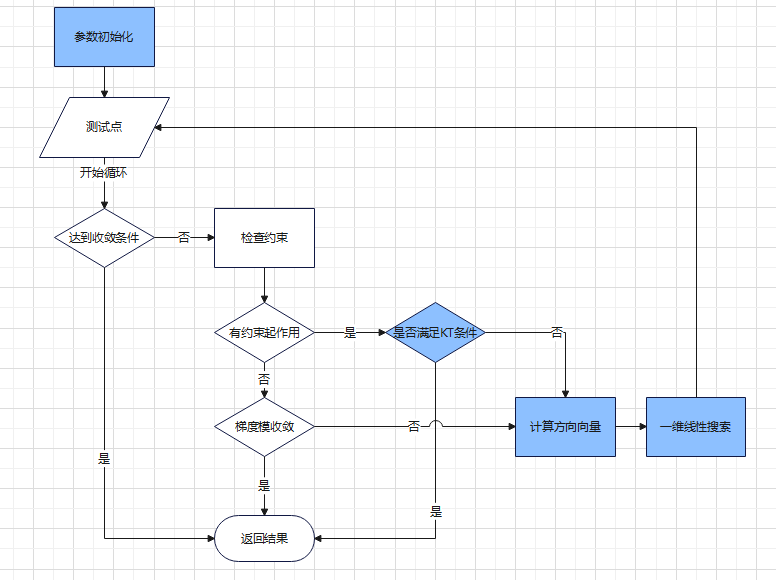
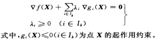
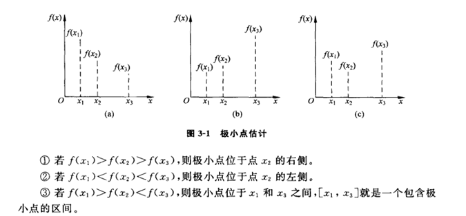
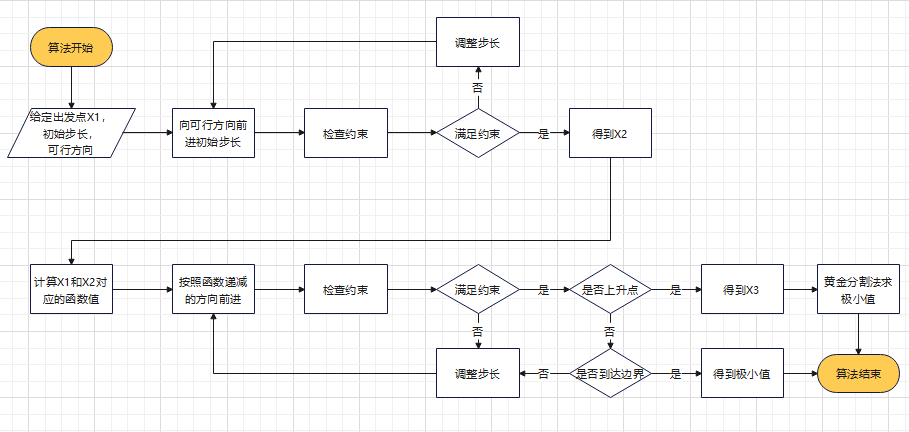

基于可行方向的能耗寻优算法
在工业场景中，节能减排一直是一个很重要的话题。而在我们服务的汽车制造行业，涂装车间的能耗在四大工艺过程中占比达到了70%，所以如何降低涂装车间的能耗成了降低汽车制造过程能耗的关键。
本文选择涂装车间的喷房风机作为研究对象，以空调的温湿度作为主要调整指标，尝试通过技术的手段来找到能耗最优解。
问题定义
已知能耗方程的条件下，设定一组温湿度的限定条件，通过优化算法找出使得能耗最小的温湿度值。
使用穷举？
目前选择的优化指标有四个，每个指标的取值跨度为10，按照步长0.01计算，我们需要计算的次数为1000^4
算法概述
经过研究，我们采用可行方向法作为算法的指导思想，由于存在温湿度的限定条件，所以算法进行了分支处理。
可行方向是指沿该方向作微小移动后，所得到的新点是可行点，且目标函数值有所下降
程序流程如下图所示：
算法实现
算法实现部分我们通过对程序流图进行详细说明来描述算法的实现过程。
参数初始化
参数初始化可以根据经验选择限定条件的边界值，如夏季模式下选择温度最大值会降低空调的能耗。
但是这种单一出发点的选择会导致算法陷入局部最优的困境，最终我们通过随机取样的方法从可行区间内选了10个点，通过多次计算减少了局部最优的可能性。随机选择出发点的同时通过指定伪随机种子，确保了算法的稳定性，即每一次优化都可以得到同样的解；通过种子的合理选择，保证选择的数据分布足够合理。
1 | |
收敛条件
算法的收敛条件包含：
循环次数
根据测试的结果，算法的收敛一般在10-15次循环，所以最终定义最大循环次数为25，超过最大循环次数后直接算法结束，返回最后一次计算的结果。
变化值
通过监控目标函数的值变化，确定算法收敛，根据经验定义为前后两次值变化小于0.1则判定算法收敛，返回最后一次计算的结果。
检查约束
约束包含针对优化指标的范围约束和结果函数的合理性约束。
范围约束
范围约束是用户通过页面输入的温湿度范围，约束的形式为：
温度 > 21 && 温度 < 26在实现中我们通过Java的Function接口来构建约束：
1
2
3
4
5
6
7
8
9
10private List<Function<Map<String,Object>, BigDecimal>> buildConstraints(final List<BigDecimal[]> rangeList){
//otobd是自定义的方法，将Object转换为BigDecimal对象
List<Function<Map<String,Object>, BigDecimal>> constraintList = new ArrayList<>();
constraintList.add(val ->
OptimizeUtils.otobd(val.get("param_1")).negate().add(rangeList.get(0)[0]));
constraintList.add(val ->
OptimizeUtils.otobd(val.get("param_1")).subtract(rangeList.get(0)[1]));
//更多约束条件省略...
return constraintList;
}检查约束的时候，直接使用Function的apply方法即可完成约束检查：
1
2
3
4
5
6
7
8
9
10
11private List<Function<Map<String,Object>, BigDecimal>> checkConstraints(BigDecimal[] initParam){
List<Function<Map<String,Object>, BigDecimal>> retConstraints = new ArrayList<>();
for (Function<Map<String, Object>, BigDecimal> f0 : constraintsList) {
//buildPointParam 方法通过将数组映射到Map，方便方法调用
BigDecimal result = f0.apply(OptimizeUtils.buildPointParam(initParam));
if (result.compareTo(BigDecimal.ZERO) > 0) {
retConstraints.add(f0);
}
}
return retConstraints;
}合理性约束
在我们确定了使用Function来实现约束检查的时候，合理性约束只需要提供封装的方法即可。例如需求是小时能耗不能为负数，封装的方法就是返回最小的小时能耗，对应到Function的定义就是：
1
(val -> minHourCostFunction(val).negate())这里对于Function的输出进行了negate操作，是为了在判断约束的时候可以统一使用大于0的判断。
KT条件
KT条件是指Karush-Kuhn-Tucker条件，它是数学优化问题中的一组条件，用于判断在约束条件下，某点是否为最优解。
结合KT条件的一般呈现，
我们得出如下结论：∇f(X)和∇g_i (X)已知，求解K-T条件，是在求解一组线性方程组。
主要求解过程使用Apache Math3包可以实现：
1 | |
梯度模收敛
系统设定一个梯度模阈值（一般来自经验和反复试错），当梯度模小于阈值的时候，我们认为当前点已经到达了一个局部最优，直接返回当前点为本次优化结果。
计算方向向量
计算方向是可行方向法的关键，一个好的方向可以让算法更快的完成收敛。从程序流图我们可以发现，计算方向来自两个分支，而针对有约束和无约束我们采用了不同计算方向的策略。
无约束
无约束情况适用梯度下降算法，当前点的负梯度方向即可行方向。
有约束
有约束情况下适用单纯形法，求解约束附近使得目标函数值最小的方向向量即可行方向。
定义算法表现形式如下：

实现过程适用Apache Math3包即可：
1
2
3
4
5
6
7
8
9
10
11
12
13
14
15
16
17
18
19
20
21
22
23
24
25
26
27
28public static double[] simplexSolver(double[] g,
BigDecimal[] initParam, Map<String, Object> fixParamMap,
List<Function<Map<String,Object>, BigDecimal>> constraints){
//传入目标函数的系数
LinearObjectiveFunction f = new LinearObjectiveFunction(g, 0);
LinearConstraint[] constraintsArr = new LinearConstraint[constraints.size()+8];
//初始化范围约束
for(int i=0;i<constraints.size();i++){
double[] g0 = calcGradient(initParam,fixParamMap,constraints.get(i),C_DELTA);
constraintsArr[i] = new LinearConstraint(g0, Relationship.LEQ, 0);
}
//构建值约束，需要在-1到1
LinearConstraint[] commonConstraints = new LinearConstraint[]{
new LinearConstraint(new double[] { 1,0,0,0 }, Relationship.LEQ, 1),
new LinearConstraint(new double[] { 1,0,0,0 }, Relationship.GEQ, -1),
new LinearConstraint(new double[] { 0,1,0,0 }, Relationship.LEQ, 1),
new LinearConstraint(new double[] { 0,1,0,0}, Relationship.GEQ, -1),
new LinearConstraint(new double[] { 0,0,1,0 }, Relationship.LEQ, 1),
new LinearConstraint(new double[] { 0,0,1,0 }, Relationship.GEQ, -1),
new LinearConstraint(new double[] { 0,0,0,1 }, Relationship.LEQ, 1),
new LinearConstraint(new double[] { 0,0,0,1 }, Relationship.GEQ, -1)
};
System.arraycopy(commonConstraints,0,constraintsArr,constraints.size(),8);
LinearConstraintSet constraintsSet = new LinearConstraintSet(constraintsArr);
SimplexSolver solver = new SimplexSolver();
PointValuePair solution = solver.optimize(f,constraintsSet,GoalType.MINIMIZE);
return solution.getPoint();
}
约束一维搜索
所谓约束一维搜索，就是求解一元函数约束极小点的算法。在确定初始区间时，对产生的每一个探测点都必须进行可行性判断，如果违反了某个或者某些约束条件，就必须减少步长因子，以使新的探测点落在最近的一个约束边界上或约束边界的一个容许区间内。
针对a、b两种单调的情况，x3和x1为相应情况的极小值，在c中我们得到一个[x1,x3]的区间，然后通过黄金分割法查找出区间最小值。
算法步骤如下：
在找到一个区间后，我们使用黄金分割法查找区间内的极小值。代码实现上使用递归逐步缩小范围，直到范围达到预定义的阈值，选取范围中心点作为极小点：
1 | |
回顾总结
在这个案例中我们通过引入可行方向法对汽车制造工艺的涂装车间能耗进行优化。
在可行方向的方向选择中我们结合了梯度下降法和单纯形法来应对是否存在约束的差异，明确了方向后我们采用了约束一维搜索获取下一次迭代的出发点，最终通过收敛条件得到一个相对最优解。
为了解决局部最优的困境，我们引入随机多个初始出发点，进行多次求解，减少局部最优出现的可能性。
最终经过验证的优化效果达到了15%的能耗节约。